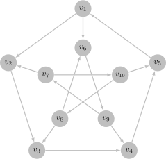

图论笔记（七）¶
有向图的定义¶
有向图（directed graph）是一个二元组，记作 \(G = \langle V, A \rangle\)，其中：
- \(V\) 是顶点的有限集合
- \(A\) 是有向边（directed edge）的有限集合，有向边又称弧（arc），\(A\) 中的每条弧均为由顶点组成的有序对
对于弧 \(a = \langle v_i, v_j \rangle\)，\(v_i\) 为弧的尾（tail），\(v_j\) 为弧的头（head），统称端点
入弧（imcoming arc）：一条弧为其头的入弧
出弧（imcoming arc）：一条弧为其尾的出弧
相邻（adjacent）：弧的两个端点相邻，有公共端点的两条弧称作相邻
入邻点（in-neighbor）：尾是头的入邻点
出邻点（in-neighbor）：头是尾的出邻点
重弧（multiple arcs）：头尾完全相同的两条弧，又称平行弧（parallel arcs）
反向弧（inverse arc）：头尾相反的两条弧互为反向弧
自环（loop）：两个端点相同的弧
简单有向图（simple directed graph）：不含自环和重弧的有向图
阶（order）：有向图 \(G\) 的顶点数量 \(|V|\)，记作 \(\nu (G)\)
弧数（size）：\(G\) 的弧的数量 \(|A|\)，记作 \(\epsilon (G)\)
思考题 7.1 阶为 \(n\) 的简单有向图的弧数的上界是多少？
\(n(n - 1)\)
完全有向图（complete directed graph）：简单有向图的每对顶点间都关联一条反向边
思考题 7.2 完全有向图的弧数是多少？
\(n(n - 1)\)
入度（indegree）：顶点 \(v\) 关联的入弧数量，记作 \(d^-(v)\)
出度（outdegree）：顶点 \(v\) 关联的出弧数量，记作 \(d^+(v)\)
度（degree）：顶点 \(v\) 的入度出度之和，记作 \(d(v)\)
定理
对于任意一个有向图 \(G = \langle V, E \rangle\)，顶点集所有顶点的入度和和出度和均等于 \(G\) 的弧数 $$ \sum_{v \in V} d^-(v) = \sum_{v \in V} d^+(v) = \epsilon(G) $$ 证明：在计算入度和时，每条边恰好被计数一次；在计算出度和时，每条边恰好被计数一次，因此定理成立.
推论
对于任意一个有向图 \(G = \langle V, E \rangle\)，顶点集 \(V\) 中的所有顶点的度和等于 \(G\) 的弧数的 2 倍 $$ \sum_{v \in V} d(v) = 2 \epsilon(G) $$ 证明：由定理有 $$ \sum_{v \in V} d(v) = \sum_{v \in V} d^-(v) + \sum_{v \in V} d^+(v) = 2 \epsilon(G) $$
入度序列（indegree sequence）：有向图 \(G\) 中所有顶点的入度组成的非增序列
最大入度（maximum indegree）：入度序列中的最大值，记作 \(\Delta^- (G)\)
最小入度（minimum indegree）：入度序列中的最小值，记作 \(\delta^- (G)\)
出度序列（outdegree sequence）：有向图 \(G\) 中所有顶点的出度组成的非增序列
最大出度（maximum outdegree）：出度序列中的最大值，记作 \(\Delta^+ (G)\)
最小出度（minimum outdegree）：出度序列中的最小值，记作 \(\delta^+ (G)\)
底图（underlying graph）：将有向图 \(G\) 的每条弧（有序对）改为边（无序对）形成的图 \(H\)
定向(orientation)：\(G\) 称作 \(H\) 的定向
思考题 7.4 有向图的底图唯一吗？图的定向唯一吗？
底图唯一但定向不唯一
思考题 7.5 阶为 \(n\)、边数为 \(m\) 的图的定向有多少种？
每条边有两种选择，共 \(2^m\) 种定向
有向图的表示¶
邻接矩阵定义为 \(\mathbf{A}(G) = (A_{i, j})_{n \times n}\)，其中 $$ A_{i, j} := \text{the number of arcs from }v_i\text{ to }v_j $$ 我们有 $$ \sum_{j = 1}^{n} A_{j, i} = d^-(v_i), \quad \sum_{j = 1}^{n} A_{i, j} = d^{+}(v_i) $$ 关联矩阵定义为 \(\mathbf{M}(G) = (M_{i, j})_{n \times m}\)，其中
可以得到 $$ \sum_{j = 1}^{m} |M_{i, j}| = d(v_i),, \quad \sum_{j = 1}^{n} |M_{j, i}| = 2 $$ 邻接表为每个节点存储一个出邻点的列表
有向图的连通¶
有向路线（directed walk）：以顶点开始、顶点和弧交替出现并以顶点结束的序列
- 起点：开始的顶点
- 终点：结束的顶点
- 长度：路线上弧的数量
有向迹（directed trail）：不经过重复弧的有向路线
有向路（directed path）：不经过重复顶点的有向路线
思考题 7.6 若图中存在 \(u\)-\(v\) 有向路线，则一定存在 \(u\)-\(v\) 有向迹吗？若图中存在 \(u\)-\(v\) 有向迹，则一定存在 \(u\)-\(v\) 有向路吗？
若存在有向路线，对于任何重复的弧，删去其中一条以及他们之间的部分，就得到一条有向迹
若存在有向迹，对于任何重复的顶点，删去其中一个顶点以及他们之间的部分，就得到一条有向路
思考题 7.7 对于有向图 \(G\) 的邻接矩阵 \(\textbf{A}\)，矩阵 \(\textbf{A}^k\) 的第 \(i\) 行第 \(j\) 列元素有什么含义？
结论是 \(v_i\) 到 \(v_j\) 所有长度为 \(k\) 的有向路线数量
证明：考虑归纳证明，当 \(k = 1\) 时，\(\textbf{A}^k = \textbf{A}\)，有邻接矩阵的定义知 \(A_{i, j}\) 表示 \(v_i\) 到 \(v_j\) 的弧的数量，也即长度为 1 的路线数量.
现假设 \(A_{i, j}^k\) 表示 \(v_i\) 到 \(v_j\) 所有长度为 \(k\) 的有向路线数量，那么长度为 \(k+1\) 的路线数量为
$$
\sum_{l = 1}^{n} A_{i, l}^k \cdot A_{l, j} = A_{i, j}^{k+1}
$$
于是结论对 \(\textbf{A}_{k+1}\) 也成立，命题得证
有向闭路线（directed closed walk）：起点终点相同的非平凡有向路线
有向闭迹（directed closed trail）：边不重复出现的有向闭路线
有向圈（directed cycle）：顶点不重复出现的有向闭迹
关于有向闭路线
需要注意这里有向闭路线要求是非平凡的，只包含一个顶点的序列不能构成有向闭路线
思考题 7.8 若图中存在有向闭路线，则一定存在有向闭迹吗？若图中存在有向闭迹，则一定存在有向圈吗？
答案都是肯定的，仿照思考题 7.6 即可论证
有向图连通的定义如下：
- 弱连通（weakly connected）：底图连通
- 可达（reachable）：若图中存在 \(u\)-\(v\) 路，则称 \(v\) 从 \(u\) 可达
- 强连通（strongly connected）：每对顶点都互相可达
定理
对于有向图 \(G = \langle V, E \rangle\)，\(G\) 强连通当且仅当 \(G\) 含一条有向闭路线经过顶点集 \(V\) 中所有顶点。
思考题 7.9 证明定理 7.2
充分性是显然的，对于必要性，若 \(G\) 强连通，则存在 \(v_1\)-\(v_2, v_2\)-\(v_3, ..., v_n\)-\(v_1\) 路线，将他们拼接到一起就是包含所有顶点的有向闭路线
思考题 7.10 强连通图的每条弧都在某个有向圈中吗？你能就此为强连通给出另一个充要条件吗？
定理：\(G\) 为强连通图当且仅当 \(G\) 的任意一条弧都在某个有向圈中且 \(G\) 弱连通
证明：先证充分性，由于 \(G\) 的底图 \(H\) 连通，对于任意顶点 \(u, v\)，可以找到 \(H\) 中的一条 \(u, v\) 路 \(u \rightarrow v_1 \rightarrow ...\rightarrow v_k \rightarrow v\)。由于任意一条弧都在一个圈中，因此 \(G\) 中存在 \(u\)-\(v_1, v_1\)-\(v_2, ... v_k\)-\(v\) 有向路线，拼接在一起就得到 \(u\)-\(v\) 有向路线，于是 \(v\) 从 \(u\) 可达，因此 \(G\) 强连通
再证必要性，首先 \(H\) 显然连通，任意一条有向路都可以替换成对应的无向版本。对于任意一条弧 \(a = \langle v_i, v_j \rangle\)，存在 \(v_j\)-\(v_i\) 路，与 \(a\) 拼接就得到有向圈
思考题 7.11 图 1.6 （a）所示的彼得森图有强连通定向吗？
有，参见下图

要证明该图是强连通的，只需注意到 \(v_1 v_2 v_3 v_4 v_5 v_1 v_6 v_9 v_7 v_{10} v_8 v_3 v_4 v_5 v_1\) 是经过所有顶点的闭路线
Robbins 定理
连通图 \(G\) 有强连通定向当且仅当 \(G\) 没有割边。
先提供一点额外的材料，能让这个定理的证明变得更简单一些
耳分解（ear decomposition）：耳分解就是将一个无向图 \(G\) 分解成 \(G_0, G_1, ...,G_k\) 使得 \(E(G_0), E_(G_1), ..., E_(G_k)\) 构成 \(E(G)\) 的一个分划，并且对于任意 \(0 \leq i \leq k\) 有
- 若 \(i = 0\)，则 \(G_0\) 是一个圈
- 若 \(i \geq 1\)，则 \(G_i\) 是一条路，且其两个端点在 \(\displaystyle \bigcup_{0 \leq j < i} V(G_j)\) 中
定理
连通图 \(G\) 有耳分解当且仅当 \(G\) 没有割边
证明：
充分性：
首先 \(G\) 中必定含有圈，不妨将其取成 \(G_0\)
接下来我们归纳的证明，如果存在 \(G_0, G_1,...,G_k\) 是 \(G[\displaystyle \bigcup_{0 \leq j \leq k} E(G_j)]\) 的耳分解且不包含 \(G\) 中所有边，那么存在 \(G_{k + 1}\) 使得 \(G_0, G_1,...,G_k, G_{k+1}\) 是 \(G[\displaystyle \bigcup_{0 \leq j \leq k+1} E(G_j)]\) 的耳分解
对于满足上述要求的 \(G_0, ..., G_k\)，我们任意取一条还未被包括进 \(G_0, ...,G_k\) 的边 \(e = (u, v)\)，如果
- \(e\) 的两端都在 \(\displaystyle \bigcup_{0 \leq j \leq k} V(G_j)\) 中，那么 \(e\) 本身就可以构成一条满足要求的路
- \(u\) 在 \(\displaystyle \bigcup_{0 \leq j \leq k} V(G_j)\) 中而 \(v\) 不在，由于 \(G - e\) 连通，存在一条 \(v\) 到 \(\displaystyle \bigcup_{0 \leq j \leq k} V(G_j)\) 的路，将其与 \(e\) 拼接，就得到 \(G_{k+1}\)
- 任意 \(e\) 的两端都不在 \(\displaystyle \bigcup_{0 \leq j \leq k} V(G_j)\) 中，那么就将违背 \(G\) 连通的条件
因此，我们可以一直这样取下去，直到 \(\displaystyle \bigcup_{0 \leq j \leq k} E(G_j) = E(G)\)
必要性：如果 \(G\) 有这样一个耳分解，那么任意一个 \(G_i\) 的点都能从两个方向到达 \(G_j\) 满足 \(j < i\)，从而最终到达 \(G_0\)，而只删去一条边不能同时切断两条路
思考题 7.12 证明 Robbins 定理
充分性：依然采用前面归纳的方式，只不过给 \(G_i\) 添加方向使得其变成一条有向路或有向圈，在 \(G_0 + G_1 + ... + G_k\) 强连通的情况下，容易说明 \(k + 1\) 时也成立，因此就给出了一种强连通定向
必要性：必要性比较容易证明，考虑 \(G\) 的一个强连通定向 \(\overrightarrow{G}\)，其任意一条弧都在一个有向圈内，也就是说 \(G\) 的任意一条边都在一个圈内，因此 \(G\) 没有割边
弱连通分支（weakly connected component）：极大弱连通子图
强连通分支（strongly connected component）：极大强连通子图
思考题7.13 弱连通图有多少个弱连通分支？强连通图有多少个强连通分支？
均为一个，就是图本身
思考题 7.14 一个顶点可以出现在图的两个强连通分支中吗？一条弧可以出现在图的两个强连通分支中吗？
均不可以，否则将两个强连通分支取并，就构成了一个更大的强连通分支，矛盾
浓缩（condensation）：将有向图 \(G\) 的所有强连通分支的集合记作 \(C\)，构造有向图 \(H=\langle C,A'\rangle\)，每个顶点 \(c_i \in C\) 表示 \(G\) 的一个强连通分支，弧 \(\langle c_i, c_j \rangle\) 当且仅当 \(G\) 含一条弧，其尾在顶点 \(c_1 \in C\) 表示的强连通分支中，头在顶点 \(c_j \in C\) 表示的强连通分支中，则 \(H\) 即为浓缩
思考题 7.15 浓缩含圈吗？
不含，否则假设 \(c_1, c_2, ...,c_k, c_1\) 构成圈，则 \(\displaystyle\bigcup_{1 \leq i \leq k} C_i\) 构成一个更大的强连通分支
计算强连通定向¶
\begin{algorithm}
\caption{计算强连通定向的算法伪代码}
\begin{algorithmic}
\Input 无割边的连通图 $G = \langle V, E \rangle$
\Initialize 弧集 $A \gets \emptyset$
\State $s \gets V$ 中任意一个顶点
\State \texttt{DFS}$(G, s)$
\For {$\text{each }e \in E$}
\State $A \gets A \cup \{\langle\text{e关联的父顶点}, \text{e关联的子顶点}\rangle\}$
\EndFor
\ForAll {后向边 $e \in E$}
\State $A \gets A \cup \{\langle\text{e关联的后代顶点}, \text{e关联的祖先顶点}\rangle\}$
\EndFor
\State 输出有向图 $\langle V, A \rangle$
\end{algorithmic}
\end{algorithm}
正确性证明¶
引理 1
算法输出的定向中，从 \(s\) 可达其他每个顶点
证明：只需注意到有向的 DFS 树即满足这一条件
引理 2
算法输出的定向中，顶点 \(s\) 从其他每个顶点可达
证明：若 \(G\) 为平凡图，则引理显然成立。若不为平凡图，则 \(G\) 的阶至少为 \(3\) 且不含割点。任取一个顶点 \(u\)
- 若 \(u\) 为非叶节点，由于 \(u\) 不是割点，因此有一个 \(u\) 的后代 \(v\) 关联一条到 \(u\) 祖先的后向边，于是可以构造出一条 \(u\) 到其祖先 \(v_1\) 的有向路
- 若为叶节点，则 \(u\) 必须关联至少一条后向边，否则其关联的树边将会成为割边，那么后向边即对应一条 \(u\) 到祖先的有向路
同理可以构造 \(v_1\) 到其祖先 \(v_2\) 的有向路，如此重复操作并拼接所有的路，即可完成证明。
时间复杂度¶
与 DFS 相同，为 \(O(V+E)\)
Tarjan 强连通分支算法¶
\begin{algorithm}
\caption{塔尔强连通分支算法伪代码}
\begin{algorithmic}
\Input 有向图 $G = \langle V, A \rangle$
\Initialize 变量 $\text{time} \gets 0$；顶点集 $V$ 中所有顶点的 $\text{visited}$ 初值为 \textbf{false}；栈 $S$ 初值为空
\ForAll {$s \in V$}
\If {$s.\text{visited} =$ \textbf{false}}
\State \texttt{DFSSCC}$(G, s)$
\EndIf
\EndFor
\end{algorithmic}
\end{algorithm}
\begin{algorithm}
\caption{DFSSCC 算法伪代码}
\begin{algorithmic}
\Input 有向图 $G = \langle V, A \rangle$，顶点 $u$
\State $\text{time} \gets \text{time} + 1$
\State $u.\text{d} \gets \text{time}$
\State $u.\text{low} \gets u.\text{d}$
\State $u.\text{visited} \gets$ \True
\State 入栈 $(S, u)$
\ForAll {$(u, v) \in A$}
\If {$v.\text{visited} =$ \False}
\State \texttt{DFSSCC}$(G, v)$
\State $u.\text{low} \gets \min\{u.\text{low}, v.\text{low}\}$
\ElsIf {$v \in S$}
\State $u.\text{low} \gets \min\{u.\text{low}, v.\text{d}\}$
\EndIf
\EndFor
\If {$u.\text{low} = u.\text{d}$}
\State 输出（以下顶点组成一个强连通分支）：
\Repeat
\State $v \gets$ 出栈 $(S)$
\State 输出 $(v)$
\Until {$v = u$}
\EndIf
\end{algorithmic}
\end{algorithm}